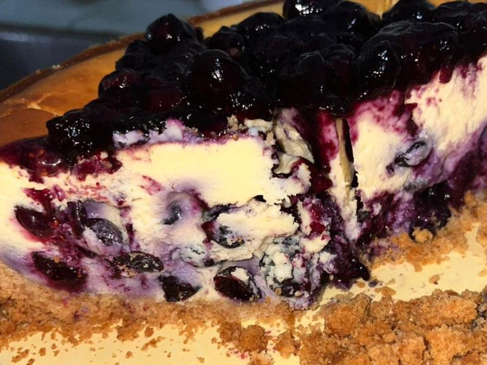
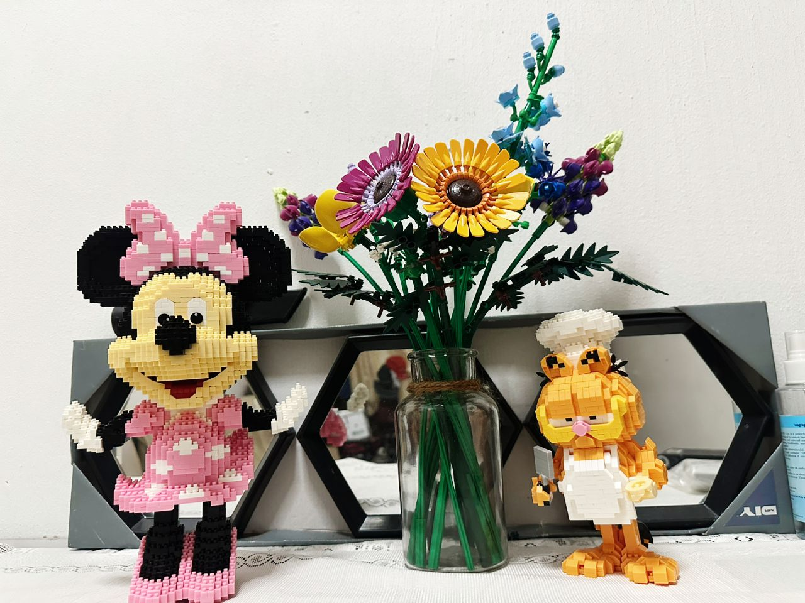
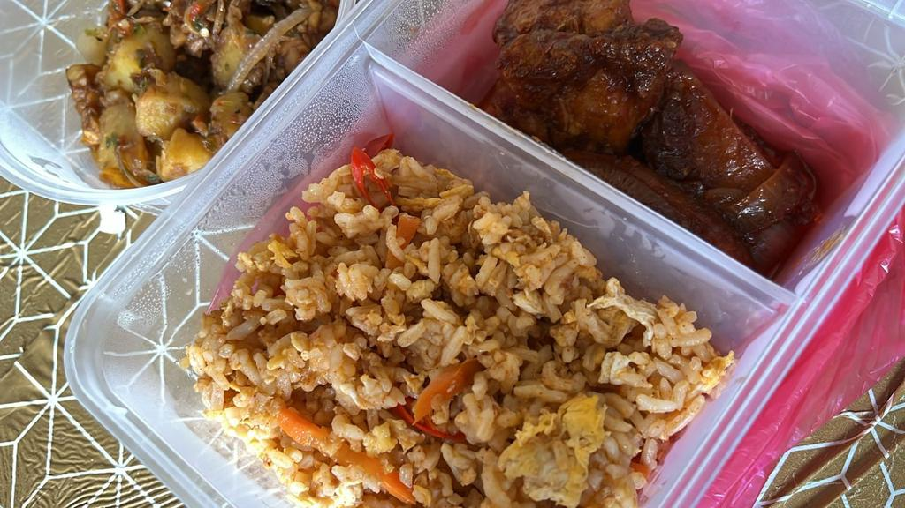

Blueberry Cheesecake
Some of my favourite things to do in my free time are bake. I learned how to bake from my brother, and now I love it too. I've made a lot of sweets, like cakes, cookies, cream puffs, and more. Besides that, I can also make easy bread and desserts. I used to run a small business that only sold burnt cheesecake. The buyers liked what they bought, too. My dream is to one day have my own coffee shop.God bless you. Amin. |

Variety of legos
After I started college, my new passion was building Legos. In times of stress, it really helps me. It eases my anxiety. Choose a hobby or pastime that you really like so that it will support you in any circumstance. In addition, writing is helpful to me, but I still much rather construct Lego structures. At home, I have a variety of lego sets, including ones with cartoon characters and flowers. Right now, I'm building 'Super Mario' sets. You'll discover that it really helps if you give it a try.
|

Fried Rice & Sambal Chicken
Additionally, cooking was my favourite activity. When possible, my mother will teach me on how to prepare my favorite dishes. Mom's dishes are the most cherished and the most delectable. I attempted to learn some of my mother's recipes to prepare meals for myself when I am away from home. On weekends, in order to allow my mother to relax, my sister and I are in charge of the kitchen while we prepare lunch for the family. |